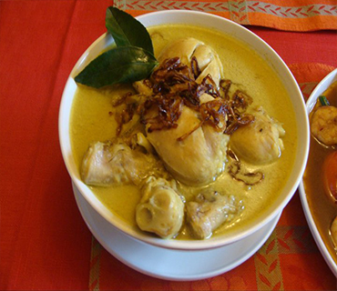

Bahan:
- 1/2 kg ayam
- 5 kotak tahu bandung
- 1 batang serai
- 2 lembar daun jeruk buang tulangnya
- 2 lembar daun salam
- 1 ruas lengkuas
- 1 bungkus santan kara 65ml
Bumbu Halus:
- 5 siung bawang putih
- 5 siung baeang merah
- 2 ruas kunyit
- 1 ruas jahe
- 1/2 sdt ketumbar
- 3 butir kemiri
- secukupnya garam /penyedap
- secukupnya gula
- secukupnya minyak goreng
- secukupnya air
Cara Membuat:
- Tumis bumbu yg telah dihaluskan smp keluat bau harum kmdian tambahkan sedikit air, setelah itu tambahkan jg daun salam, daun jeruk, serai, lengkuas, diamkan sebentar
- Kemudian tambahkan ayam kedlm bumbu td tunggu sm ayam berubah warna kmdian masukan tahu, masak smp bumbu meresap bila perlu tambahkan air. Setelah bumbu meresap dan ayam empuk masukan santan, tambahkan gula garam penyedap. Aduk rata smp semua meresap dan tercampur rata, kmdian tes rasa setelah pas angkat dan sajikan..